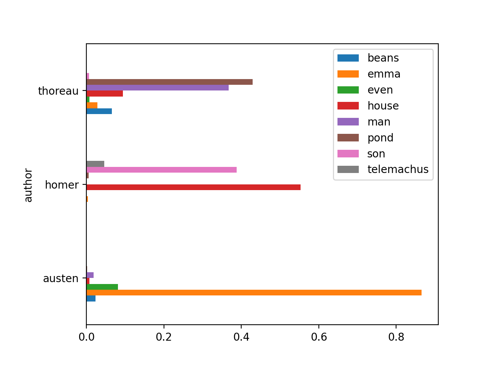

Exercise: Building carrels¶
In this section you will build two study carrels (“data sets”). The first will be from sample data. The second will be from content of your own.
By far, the creation of study carrels is the most complicated in the Toolbox. Moreover, it is the whole point of the Reader. Everything else is extra. Given a study carrel (which is made up basic plain text files and a relational database), the astute student, researcher, or scholar can do all sort of anaysis without the balance of the Toolbox commands. One can create a study carrel, put it on the Web, give to others, compute against it using applications that are decades old, compute against it using existing applications, compute against it using applications that have yet to be invented, use it as input to machine learning models, use it as a hub for collaborative efforts, create collections of carrels and call the results a library, etc.
Creating carrels requires practice, but it is not rocket surgery, and after practice you might find yourself creating carrels for everthing. Your email. That blog. Twitter feeds. The whole of Charles Dickens’ works. Sets of annual reports. Everything in your assigned reading list. “When you have a hammer, everything begins to look like a nail.”
From sample data¶
In this exercise, you will build a study carrel based on sample data. Let’s go:
download the Iliad and the Odyssey from https://distantreader.org/apps/homer.zip
uncompress the downloaded zip file and save the result on your desktop
open the resulting folder/directory, use your text editor to open one or more of the files the folder contains, and notice how each file is simple plain text
open your terminal application
change directories to the desktop
use the following Toolbox command to create a carrel named homer from the homer directory:
rdr build homer homer -s -ewait patiently
If this is the first time you’ve created a carrel, then a number of things may go wrong. First of all, the Toolbox may not be able to find a Java archive called Tika. If it is not found, then the Toolbox will try to download it. Second, if the Toobox says that Tika can not be launched, then you probably do not have Java installed. Install Java from http://java.com and reissue the command. Third, if you have never used a Python module alled SpaCy, then you probably do not have one or more language models installed. When this happens, the Toolbox will ask you if you want to install them. Answer “y”, the modules will be installed, and reissue the build command. All of these things only need to be done once, and the next time things will go much smoother. I promise.
After you issue the build command, the Toolbox will do many things: create a directory where your carrel will be saved, copy the original data to the carrel, do all sorts of feature extraction against it, save the features to sets of delimited files, save (“reduce”) the delimited files to a relational database, and it is these delimited files and relational database from which anaysis is done.
After your carrel is built, you ought to be able to apply just about any Toolbox command to it, such as:
rdr info homer
rdr ngrams homer -c -s 2
rdr cluster homer -v
rdr summarize homer
rdr read homer
Once you get this far, you ought to be able to answer all sorts of questions:
How many words does the carrel contain, and how big is it compared to other things? (For example, Melville’s Moby Dick is about 220,000 words long, and the Bible is about 800,000 words long.)
How many items are in the carrel?
How do the sizes of each item compare?
What are the most frequent one-word and two-word phrases?
What are the most frequently mentioned things, what do they do, and how are they described?
In a very general way, what is the carrrel about?
Now ask yourself, “If I were given the Iliad and the Odyssey in the form of a book, how quickly would I have been able to the address the questions above?”
For extra credit, repeat the same process as above, but this time use Jane Austen’s Emma as sample data. (Get the data at https://distantreader.org/apps/austen-emma-1815.zip.) When you are finished, compare and contrast the two carrels. Hopefully the result will raise more questions than answers. At the same time, I believe you will be able to tell a compelling and plausible story.
From your data¶
Creating study carrels from your data is what we are really here to do. Here is one way to make that happen:
create a new folder on your desktop and call it “practice”
find between six to twelve PDF files on your computer, and copy them to the newly created directory
open your terminal application
change directories to the desktop
use the following Toolbox command to create a carrel named practice from the “practice” directory:
rdr build practice-carrel practice-carrel -s -ewait patiently
Like before, when things are done, you can now use any Toolbox command against practice:
rdr info practice
rdr bib practice
rdr ngrams practice -c -s 2
rdr cluster practice -v
rdr summarize practice
rdr read practice
Now you can ask yourself, “How is my newly created carrel similar as well as different from the carrel named homer?”
For all sorts of reasons, you may find fault with the carrel built with your data. This is to be expected and explained in many ways. First and foremost, the sample data was curated; the text was transcribed from a translation of Homer’s works. On the other hand, your text was extracted from PDF files, and consequently the text is not as “clean”, if it exists at all.
Second, your stopword list may need to be updated because the default stop word list is very generic. Edit the stop word list, and repeat the ngrams, summarize, and read commands. The results ought to make more sense.
Third, the Reader becomes more useful as the size of your carrels grows. If you only have six articles to read, then I suggest you read them in the traditional manner. After all, you are smarter than a computer. On the other hand, if you have to read at least two dozen items, then suppliement the reading process with the Toolbox. Your comprehension will increase, some things will be reinforced, and new things will be brought to light.
For extra credit, analyze a set of things found on the Web. Here’s how:
create a new folder on your desktop and call it “hobbies”
use your Web browser to search for things regarding your… hobby
open any search result you find interesting
use your Web browser to save what you see as an HTML file in the “hobbies” directory
go to Step #3 a dozen times or until you get tired
open your terminal, change directorires to the desktop, and create a carrel based on the directory named “hobbies”:
rdr build hobbies hobbies -s -e
The point of the extra credit exercise it to demonstrate that the Reader Toolbox can process many different types of files. Plain text. HTML. Word documents. PDF files. Email messages. Etc. All you have to do is put files in a directory and run the rdr build command against it.
With secret sauce¶
Study carrels can be created from just about any individual folder/directory filled with files. It does not matter how many files there are. It does not matter what type of files they are. It does not matter what the names of the files are. Put a bunch o’ files in a directory, and use the Toolbox’s build command against the directory.
But your carrels will take on a much greater meaning if you add the Toolbox’s “secret sauce”. That secret sauce is a file, or more specifically, a comma-separted value (.csv) file named metadata.csv. If a directory contains a file named metadata.csv, and if the file is a comma-separated values file, and if the file contains columns named “author”, “title”, “date”, and/or “file”, and if each cell in the file column is the name of a file in the given directory, then the Toolbox will read the metadata file as it imports the data, and each of your files will be associated with author, title, and date values.
A metadata.csv file becomes indispensable when you want to compare extracted features to authors, titles, and dates. In this way you will be able to ask questdions like, “How do the authors’ ideas compare?”, or “How does an idea ebb & flow over time or throughout the corpus?”
As an example try this:
download the zip file at https://distantreader.org/apps/homer-austen-thoreau.zip; the file includes Homer’s Illiad and Odyssey, Jane Austen’s Emma, and Henry David Thoreau’s Walden.
uncompress the downloaded zip file and save the result on your desktop
inside the newly uncompressed folder ought to be a file called “metadata.csv”; open metadata.csv with your spreadsheet applcation and notice how there are four colums: file, author, title, and date
open your terminal application
change directories to the desktop
use the following Toolbox command to create a carrel named homer-austen-thoreau from the homer-austen-thoreau directory:
rdr build homer-austen-thoreau homer-austen-thoreau -s -ewait patiently; if you had two read four novels, it would take you a long time too
Once your carrel is built, you ought to do everything as before, but some of the Toolbox’s output be more meaningful. For example, the bib command will list the authors, titles, and dates. You will be able to search via author’s name using the search command. After doing topic modeling, you will be able to pivot the underlying model and see how things compare to authors or dates. Try the following comands to see what I mean::
rdr info homer-austen-thoreau
rdr bib homer-austen-thoreau
rdr search homer-austen-thoreau -q author:homer | more
rdr tm homer-austen-thoreau
rdr tm homer-austen-thoreau -p read -o chart -y barh -f author
After you run the last command, you ought to see a horizontal bar chart illustrating the degree each author wrote about the computed topics. Notice how each author’s writings are distinct. Put in the form of questions, “What did Austen write about, what did Homer write about, and what did Thoreau write about?”
Adding a metadata.csv file literally adds four new dimenstions to your study carrel, dimensions that we often take for granted. Creating a metadata.csv file can be challenging though. On the other hand, everybody has a spreadsheet application at their disposal, and it is not difficult to identify the author, title, date, and file name of each of your files. Right? :)
Helper applications¶
Even in this age when we feel we are drinking from the proverbial firehose, it is it can be quite challenging to create a folder/directory, fill it with content, and describe each file with some metadata. To make my life easier, I have written the following scripts that create such data structures for me, and they are created from folders of content, the content of email messages, content from the HathiTrust, and things like novels filled with chapters. The items below outline and point to such tools:
folder2metadata - Given a directory containing files named in a particular way (author-title-date), this Python script outputs a CSV file suitable for the Reader
mbox2reader - Given a few configurations, this Python script reads an mbox file (a set of email messages), and outputs a file system amenable to the Reader
htid2books - Given an HathiTrust access key, HathiTrust secret token, and a HathiTrust identifier, this set of Bash/Perl scripts output plain text as well as PDF versions of a book; use these scripts to get the content for a study carrel
txt2chapters - Given a plain text file, a pattern, and a directory, this Perl script subdivides the file into chapters saved in the directory
Summary¶
When it comes to the Toolbox, creating study carrels is where the power is. The process requires practice. Create a directory. Fill it with files. Build a carrel. Repeat. The process is iterative, and with each iteration the use and understanding of the directory’s content will increase.